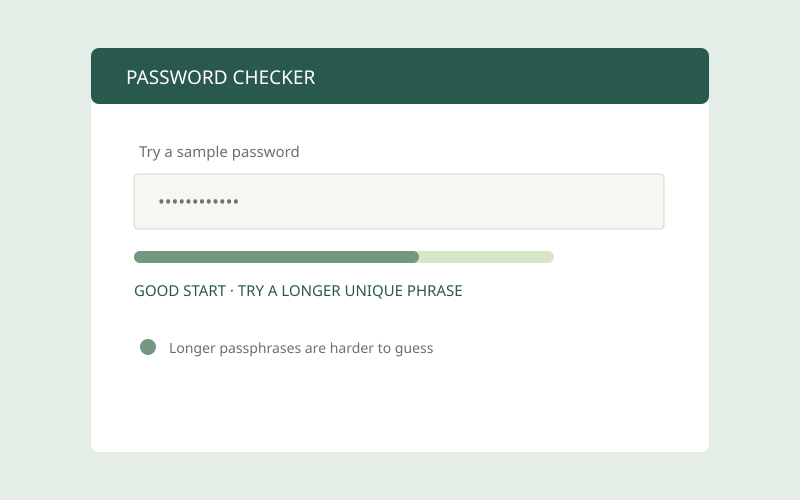
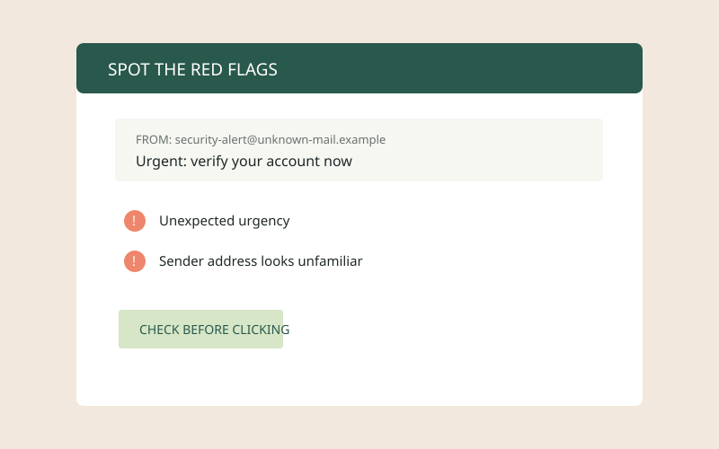
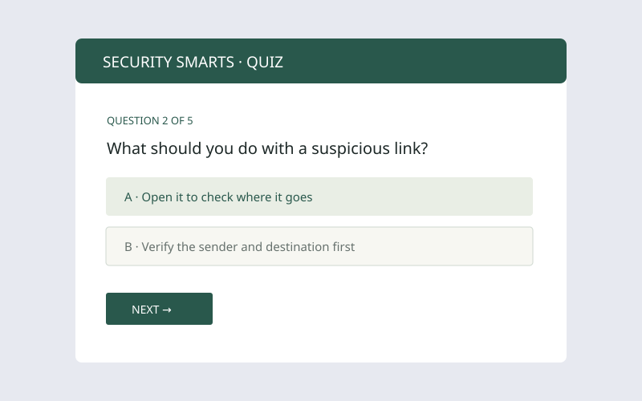
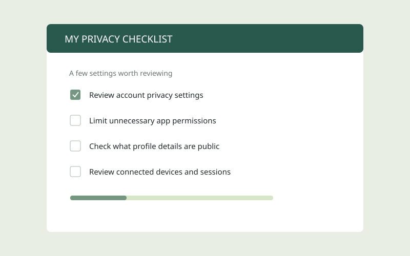
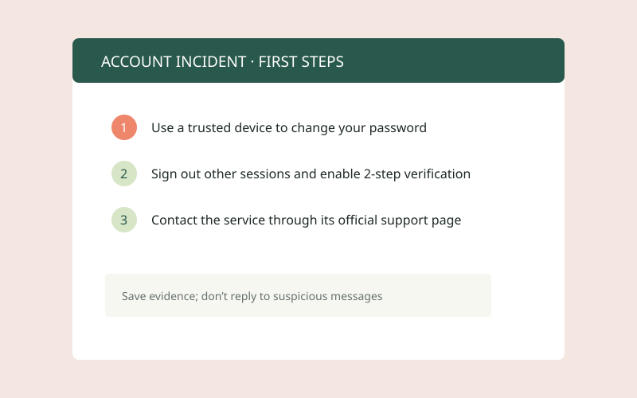
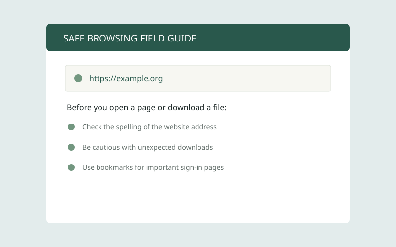

01 · WEB SECURITY
Password safety checker
A beginner-friendly demo that checks a sample password for length and variety, then suggests ways to make it stronger. It won’t store or transmit entered text.
Try the sample checker ↗ Gift Moses OfemStudent portfolio
Gift Moses OfemStudent portfolio
LEARNING BY MAKING
Interactive learning demos about cybersecurity and safer online habits.
These educational demos help practise basic security awareness. They are not professional security tools or services.

01 · WEB SECURITY
A beginner-friendly demo that checks a sample password for length and variety, then suggests ways to make it stronger. It won’t store or transmit entered text.
Try the sample checker ↗
02 · SECURITY AWARENESS
A visual guide to common warning signs in suspicious emails, messages, and links, with reminders to verify before clicking.
Explore the guide ↗
03 · INTERACTIVE LEARNING
A short quiz that helps learners practise safer choices around links, passwords, account security, and personal information.
Take the quiz ↗
04 · PRIVACY
A simple checklist for reviewing account privacy settings, app permissions, public profile details, and connected devices.
Open the checklist ↗
05 · INCIDENT RESPONSE
A calm first-steps guide for a suspected account compromise, including securing access, saving evidence, and contacting official support.
Open the guide ↗
06 · DIGITAL SAFETY
A practical field guide to checking website addresses, handling downloads carefully, and finding sign-in pages safely.
Explore the guide ↗AUDIO NOTE
Gift shares a short introduction about learning cybersecurity and building skills one step at a time.